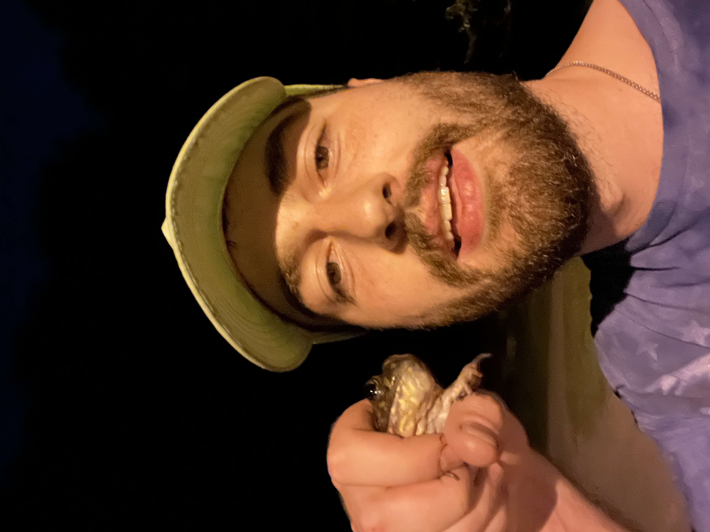

About Me

IT Professional & Frog Catching Amateur
I’m an IT Support Technician with hands-on enterprise experience managing user accounts, endpoints, and cloud services. I studied Information Science at the University of Pittsburgh, where I focused on cybersecurity, advanced web development, and database management. I’m passionate about optimizing digital systems and making technology more secure and accessible. The purpose of this site is to improve my web development skills, and to give me a place to share my hobbies and projects.